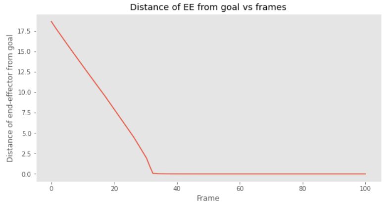
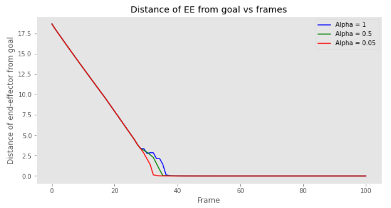
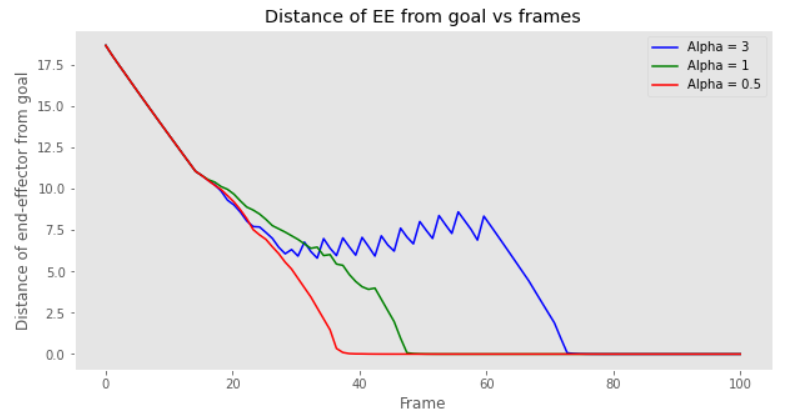
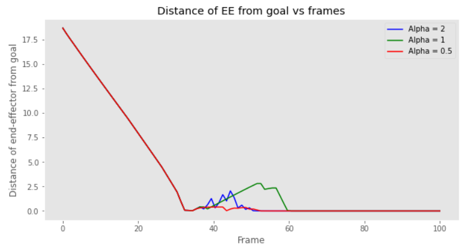
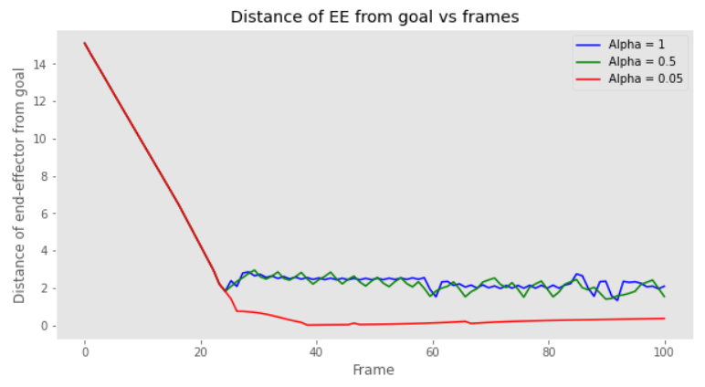

In order for a mobile manipulator to execute its task smoothly, it must take
into account environment variables such as moving agents or obstacles. This
can be done by moving the manipulator into a configuration that is atleast at a
threshold distance from obstacles. To make sure this motion doesn’t affect the
movement of the end-effector, redundant degrees of freedom have to be utilized
to achieve collision-free configuration. The amount of flexibility depends on the
degree of redundancy, i.e., on the number of redundant DOFs. Redundancy is
defined as the difference between the required and available DOFs. The execution
of obstacle avoidance is of prime importance in tasks such as spray painting,
arc welding, etc.
The goal of this project is to utilize redundant degrees of freedom of a 6-link
mobile manipulator to tackle the problem of obstacle avoidance. The endeffector
of the manipulator with stationary base is subject to obstacles in its
path to a goal pose. The primary objective of this project is to avoid coming in
contact with obstacles under different scenarios.
Thus, we are going to present a Software Project of type A, where we implement obstacle avoidance algorithms as are presented in [2] using GTSAM
library. The code should determine the trajectory of the end-effector of the
redundant manipulator in order to avoid obstacles.
1.2 Related Work
[1] presents a computationally efficient algorithm to deal with real-time demands
of obstacle avoidance in practical applications. Their approach is to determine
the required joint angle rates for the manipulator under the constraints of specified
end-effector trajectories and obstacle avoidance criterion. The obstacle
avoidance technique used is to identify for each period in time the point on the
manipulator that is nearest to the obstacle and assign to it a desired velocity
component in the direction opposite to the obstacle surface.
[2] presents a method of on-line obstacle avoidance of redundant manipulators
based on redundancy resolution at the velocity level. The obstacle avoidance
algorithms presented in this paper assign each point on the body of the manipulator, which is close to the obstacle, a velocity or force component in a
direction that is away from the obstacle. This paper also presents a method
of prioritizing between various tasks and utilizing this concept for multiple obstacle avoidance. A method for smooth transition between tasks as well as for
varying the avoiding velocity has been presented in this paper.
1.3 Project Contribution
The two main goals performed by the manipulator with stationary base are :
End-Effector Motion - The redundant manipulator’s end-effector should reach
the desired final destination from a given initial position.
Obstacle Avoidance - The mobile robot should avoid obstacles along the
path traversed without colliding. We assume that the links of manipulator arm
are not counted as obstacles, so they are free to overlap.
The above goals were achieved for the following scenarios:
Scenario I : End-effector motion in the absence of obstacles
Scenario II : Manipulator arm motion disturbed by the stationary obstacle
Scenario III : End-effector motion disturbed by the stationary obstacle
Scenario IV : Manipulator motion disturbed by moving obstacle
2 Approach
2.1 Methodology
In a manipulator system, the relationship between the configuration variable q
and the position of the end-effector x can be described by the following equation:
x = f(q)
(1)
where q is an m dimensional vector for an m link arm. x gives the task space
vector of n dimensions. The corresponding relationship between the joint velocities
q̇ and the task velocities ẋ is obtained by differentiating (1)
ẋ = Jq̇
(2)
Here, J is the n × m Jacobian matrix. According to this equation, a motion
in the joints results in a motion in the task space. This means that in order to
calculate motion in joints that result from desired movement in the task space,
the following equation is taken into account
q̇ = J -1ẋ
(3)
where J -1 is the inverse of the Jacobian matrix J. An inverse is achieved
for a square J matrix (Full-rank). But this is the case for a non-redundant
manipulator. For a redundant manipulator (which is desired in our case), the
dimensions of the joint space exceeds the dimensions of task space. Thus, the
Jacobian matrix doesn’t turn out to be a square one. The inverse of J doesn’t
exist. For a generalized J#, there can be infinite solutions for q̇. Therefore we
take the Moor-Penrose inverse J+. A solution can be given as
q̇ = J+ẋ + Nφ̇ = J+ẋ + (I − J+J)φ̇
(4)
N represents projection into the null space of J and φ̇ can be any n dimensional
velocity vector. The 2nd term in rhs can be utilized to achieve obstacle avoidance
or some other constraints. To perform this additional subtask, the velocity φ̇ is
used. Then the secondary task is defined by some motion xt = ft(q) like in the
case of obstacle avoidance, the velocity φ̇ can be defined as
φ̇ = J+AẋA
(5)
To avoid any possible obstacles the manipulator has to move away from them
into a configuration where the distance between them becomes larger. Usually,
the basic strategy for obstacle avoidance is to identify the points on the robotic
arm that are near obstacles and then assign to them the motion component that
moves those points away from the obstacle. The robot motion (configuration) is
changed if at least one part of the robot is at a critical distance from an obstacle.
We denote the obstacles that are closer to the critical distance as the active
obstacles and the corresponding closest points on the body of the manipulator
as the critical points. At any moment, if an active obstacle exists in the vicinity
of the manipulator, then the equation for joint velocity is represented as
φ̇ = J+eẋe + (I − J+J)J+AẋA
(6)
where J+A is the inverse Jacobian of the critical point and xA is the motion
of this critical point in a direction away from obstacle. However, there is a
need to prioritize between end-effector motion and obstacle avoidance. In the
above case, end-effector motion is given a higher priority because we are finding
configurations in the null space of the first task for obstacle avoidance. In this
case, if an obstacle comes in the way of the motion of end-effector, it collides
with it. Hence, we give a higher priority to obstacle avoidance. this is done
with the below equation.
φ̇ = J+AẋA + (I − J+AJA)J+eẋe
(7)
where J+e
is the inverse Jacobian of end-effector. In this case, we are computing
the viable position of end-effector in the null-space of obstacle avoiding configurations.
In obstacle avoidance, the priority of the avoiding task may depend on the
type of obstacle and on the distance to the obstacle. Therefore, it is beneficial
if the control method enables a smooth change of task priorities. Therefore, a
method for smooth transition was proposed by [2]:
φ̇ = J+AẋA + (I − λ(xA)J+AJA)J+eẋe
(8)
where λ(xA) is a scalar measure of how "active" is the primary task, scaling the
vector xA to the interval [0, 1]. When the primary task is active λ is λ(xA) = 1,
and when the primary task is not active, it is λ(xA) = 0.
We take λ(xA) = α. Formulation (8) allows an unconstrained joint movement while α is close to zero (α ≈ 0). Thus, the robot can track the desired
task-space path while it is away from the obstacle. On the other hand, when
the robot is close to the obstacle (α ≈ 1), the formulation in (8) takes the form
(7) and only allows movement in the null space of the primary task, i.e., the
obstacle-avoidance task.
2.2 Project Implementation
Environment: The project was implemented on Google Colaboratory in Python
3.6.7 using the GTSAM Library.
Manipulator motion execution: The animation module of matplotlib
library was used to execute manipulator motion. A 100 frame animation was
used for the simulation of each scenario. The animations were then saved as
.mp4 and .gif files.
Functions: A manipulator class for 6-link arm performs the following functions-
__init__ : Initialize six-link arm manipulator
fk : Forward kinematics.
jacobian : Calculate manipulator Jacobian.
get_joint_positions : Returns the x and y coordinates of each joint.
first_task : Calculates Jacobian and velocity of critical point.
get_obstacle_distances : Calculates distance of joints and mid points of links
from obstacle.
joint_mid_jacobian : Calculates critical point Jacobian.
avoid_obstacle : Calculates velocity of critical point along opposite direction to the obstacle.
Algorithm: The pseudo-code of the algorithm used has been presented in this
report. The Project.ipynb notebook can be viewed for further clarification on
the methods implemented.
Novel implementation: In [2], the poses along the trajectory are calculated
once. However, in our implementation, we calculate in every iteration the set of
poses along a trajectory that joins the current position of end-effector and the
goal pose. This allows a shorter traversal path for the manipulator.
3 Results
The algorithm is evaluated based on four scenarios. For the sake of simplicity,
we use a single circular obstacle for each scenario. The obstacle is represented
by the blue circle. The goal is represented as the red dot. The plot of distance
of EE from goal is given to evaluate the smoothness of the end-effector path as
we vary the alpha value.
The algorithm was repeated multiple times using random positions of the goal
pose, random initial joint angles and random centres of the obstacle. The results
of this experiment are presented in table 1. The two variables we consider
are- whether collision occurs and whether the end-effector reaches the goal pose.
Scenario 1: In the first scenario, no obstacle is present. This scenario gives
an estimate of the natural path of the end-effector in the absence of obstacles.
Any deviations from this path will be evaluated in the subsequent scenarios.
For the no obstacle scenario, the plot in Figure 1 is a linear one, given the value
of alpha is 1.
No Obstacle with alpha = 1

Figure 1: Plot for no obstacle scenario with alpha = 1
Scenario 2: In this scenario, an obstacle is placed in a position so as to make
the manipulator go around it to reach the goal pose. The manipulator is successful in
reaching the goal while avoiding the obstacle, as can be observed in
the results. The distance vs frame plots in Figure 2 are given for values of alpha
1, 0.5 and 0.05.
Scenario 3: In this scenario, an obstacle is placed directly on the path of
the end-effector. The end-effector successfully reaches the goal pose after deviating
from its path, just enough to avoid the obstacle. The distance vs frame
plots in Figure 3 are given for values of alpha 1, 0.5 and 0.05.
Stationary obstacle on path, alpha = 1Stationary obstacle on path, alpha = 0.5Stationary obstacle on path, alpha = 0.05

Figure 3: Plot for stationary obstacle in EE path scenario with alpha = 1, 0.5,
0.05
Scenario 4: This scenario consists of two runs of the program. In the first
run, a moving obstacle is orchestrated to move diagonally such that it doesn’t
cross the path of the end-effector. The movement of the manipulator is given
for values of alpha 3, 1 and 0.5 (See Figure 4). In run 2, the moving obstacle
is made to cross the path of the end-effector. This time the program takes the
alpha values 2, 1 and 0.5 (See Figure 5).
Moving obstacle, alpha = 3Moving obstacle, alpha = 1Moving obstacle, alpha = 0.5

Figure 4: Plot for moving obstacle not crossing EE path scenario with alpha =
3, 1, 0.5Moving obstacle crossing path, alpha = 2Moving obstacle crossing path, alpha = 1Moving obstacle crossing path, alpha = 0.5

Figure 5: Plot for moving obstacle crossing EE path scenario with alpha = 2,
1, 0.5
Failure scenario: There are scenarios where the end-effector fails to reach
the goal pose. One such scenario is presented in Figure 6 and the alpha value
is set as 1.
Failure scenario

Figure 6: Plot for failure scenario with alpha = 1, 0.5, 0.05
Table 1: Algorithm statistics over 1000 runs. Alpha = 1.5 and Frames = 200
Collision
occured
EE didn't
reach goal
Meaning
Frequency
Percentage
True
True
Goal out of reach/
ran out of frames
288
5.76%
True
False
Low alpha value
332
6.64%
False
True
Failure scenario
376
7.52%
False
False
Success!
4004
80.08%
Total
5000
100.0%
4 Discussion
Evaluation of plots: The alpha value helps in the smooth transition between
the tasks. If alpha value is set high, then greater weight is given to the first
task and vice versa. In the plots, it is observed that the greater the value of
alpha, the greater is the weight placed on deviation due to obstacle avoidance,
and the greater is the displacement of the end-effector with respect to the goal.
On the other hand, too low a value of alpha makes the manipulator move over
the obstacle without avoiding it. A middle ground is decided for each scenario,
where the movements of end-effector are relatively smooth and the manipulator
manages to avoid the obstacle. This is true for all the scenarios. In the failure
scenario, for a very low level of alpha, the end-effector manages to reach the
goal, but by moving over the obstacle.
Evaluation of table 1: From the table, it is observed that our algorithm
is successful (reaches goal without bumping into the obstacle) 80% of the times
it runs. However, there are certain other scenarios where reaching the goal is
not that straight-forward.
Collisions mainly occur due to a low value of alpha, whereby avoiding obstacles is
not given as high a priority as is required from the situation. Other
reasons of collision occurrence could be the initialization of obstacle center in
very close proximity to the arm links and joints, since we are randomly selecting
obstacle coordinates.
The reasons for the end-effector not reaching its goal could be due to the
constant backtracking of EE due to displacement accountable to obstacle avoidance.
This leads to the slowing down of the progress of EE, as a result of which,
it doesn’t complete its journey within the given number of frames.
A failure scenario occurs when the manipulator is capable of reaching the
goal by avoiding the obstacle, but it doesn’t. This happens in cases where the
extension of manipulator arm is limited due to the presence of the obstacle.
This is, clearly, a flaw in the algorithm. An obvious solution is to find reach
around the obstacle in the other direction and extend the EE towards the goal
pose. Incorporating this method is beyond the scope of this project and is left
for future work.
Future Work: As observed in Table 1, collisions occur in some scenarios,
and not in others. This is purely dictated by the value of alpha. The closer
the obstacle, the greater should be the weight placed on avoiding it. Therefore,
instead of fixing a value for alpha, it can be a function of the distance of the
critical point from the obstacle.
In this project, we have fixed the value of the velocity both during obstacle
avoidance as well as trajectory tracking. Collisions can be prevented by tweaking
the avoiding velocity to increase in close proximity to the obstacle. This
method can be implemented in a future work.
In this project, we assigned a motion in the opposite direction to the obstacle
at the critical point. Instead of doing this, we can make the critical point move
in a tangential direction when it is in close proximity to the obstacle. Essentially,
when the critical point hits the threshold from the obstacle, it can either
move to its right or left side (this is the tangential motion). If the goal lies to
the left, the critical point moves left. Same for the other side. In future work,
we’d want to investigate failure cases for this novel method.
Another method to avoid failure cases is to make the manipulator bend in
the other direction if it is unable to stretch itself enough to reach the goal pose
due to obstacle.
Environmental agents can be very complex and very unlike the simplistic
model implemented in this project. Some features may be added to the model
to make it realistic in a future work. This includes treating the manipulator
links as obstacles, using multiple obstacles, obstacles with irregular boundaries,
etc.
References
[1] Klein et al. Obstacle avoidance for kinematically redundant manipulators in
dynamicallyvarying environments.
[2] L. Zlajpah et al. Obstacle avoidance with industrial robots